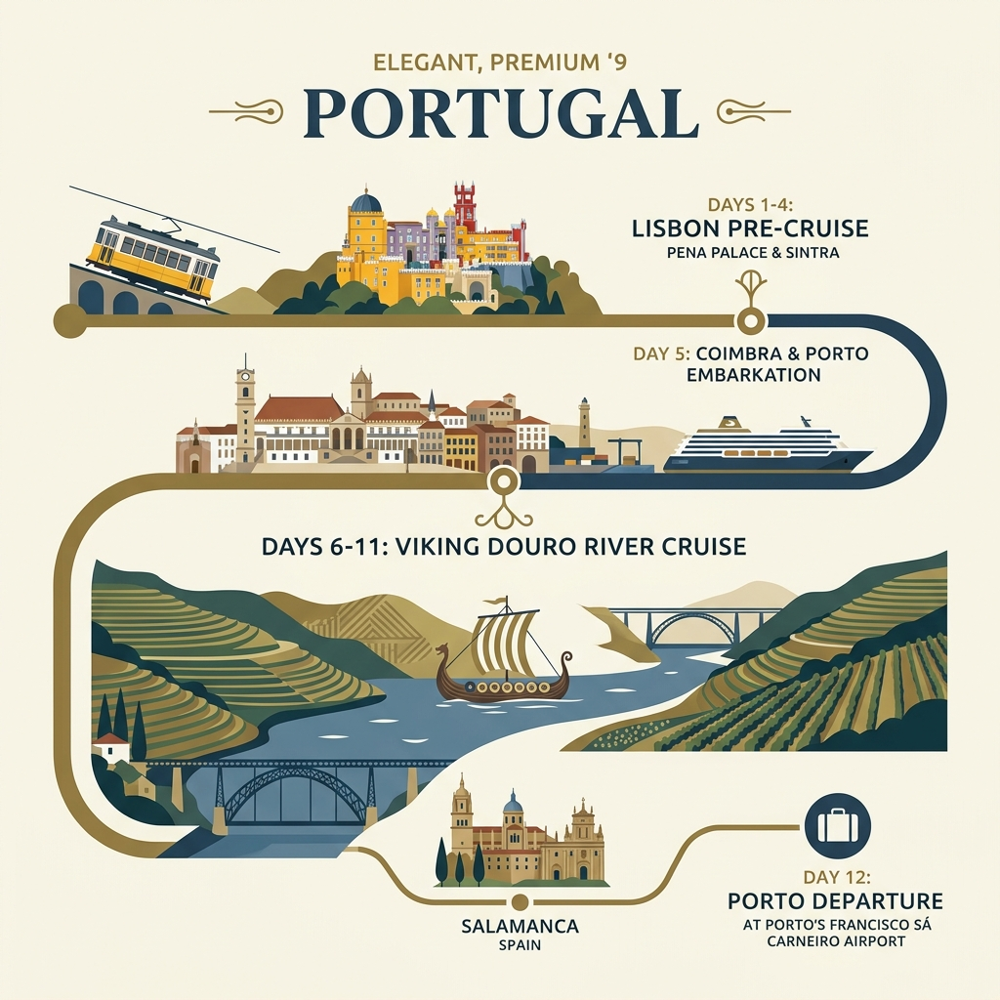

12-Day Pre-Cruise & River Cruise Itinerary (July 18 – July 29, 2026)
Lisbon is built on extremely steep hills. Walkways are paved in traditional calçada portuguesa (cobblestones) which are highly slick when worn down or damp. High-traction rubber soles are mandatory. Avoid unnecessary uphill climbs by utilizing vertical transit shortcuts (metro station escalators, public lifts, and vintage Tram 25).

Upon arrival, you will be met at the airport by a Viking Representative who will accompany you to the Corinthia Hotel. Check-in, unpack, and relax.
Supermarket run for local Portuguese wines, fresh bakery items, and snacks. Avoid overpriced hotel shops—this is where the local neighborhood shops.
Welcome Dinner. Enjoy a contemporary, authentic twist on traditional Portuguese cuisine using local ingredients in a lively, relaxed atmosphere.
Discover the streets of Lisbon and ascend up to Bairro Alto. Cobalt-blue tiles, traditional streets, and panoramic views. Walkways are paved in traditional cobblestones—high-traction rubber soles are mandatory.
Skip overcrowded Time Out Market. Step into this classic local tasca (tavern) for an authentic bifana (marinated pork sandwich) with local commuters.
Stroll in one of the city's loveliest public parks with geometric hedge displays overlooking the Tagus River.
Venture into the historic Alfama district for a traditional, soulful Fado music performance and dinner at an atmospheric local restaurant.
Board the air-conditioned van for the day-trip. Base price $35/person (excludes monument entries). Pre-purchase entry tickets to Quinta da Regaleira and Pena Palace to secure slots.
Explore the whimsical and colorful fairytale Pena Palace. Save time and avoid massive queues for the cramped rooms by choosing the €10 ($11) "Park and Exterior" ticket. The exterior terraces offer spectacular views.
Explore the mystical, Masonic-inspired estate of Quinta da Regaleira, including the lush gardens, secret tunnels, and the famous well. Watch your step on damp stairs.
Enjoy a scenic drive along the dramatic Atlantic coastline of Cabo da Roca, the westernmost point of continental Europe, with cliffs dropping 140 meters.
Seaside town with beautiful beaches. Tip: Skip the overpriced tourist traps on the main squares and look for a quiet, authentic tasca tucked away in backstreets for fresh seafood.
Board the tour van for the return transfer. Spend the late afternoon strolling through the beautiful plazas and watching the city come alive under evening lights.
Dine at an acclaimed spot like Bairro do Avillez (seafood/tapas) or Sacramento (romantic vaulted palace cellars). Reservations are mandatory.
Board the air-conditioned van. Base price from $58/person. Live guide/driver. 10-hour total duration. Pick-up from hotel/central point.
Major Christian pilgrimage site. Visit the Chapel of Apparitions and the Basilica of Our Lady of Fátima where the three shepherd children are buried.
Stunning 14th-century Gothic masterpiece built to thank the Virgin Mary. Receives far fewer crowds than monuments in Lisbon, providing a peaceful experience.
Seaside town famous for the world's largest surf waves. Tip: Dine at Taberna d'Adelia (Michelin-reviewed seafood). Look for local women drying fish on beach racks.
Walk the ancient perimeter walls (Caution: 20-30 ft high, no railings). Try Ginja de Óbidos (sour cherry liqueur) in an edible chocolate cup from a local vendor.
Relax on the drive back. Drop-off at Corinthia Hotel. The evening is free to rest before your cruise check-in tomorrow.
Enjoy a relaxing final night dinner at the hotel. Get a good night's rest before checking out tomorrow and boarding the Viking Osfrid in Porto.
Checkout from Corinthia Hotel. Board the Viking motorcoach for your scenic transfer north. Luggage will be handled directly for you.
Explore the historic university grounds, including the spectacular Joanina Library. Enjoy a traditional lunch (included) in Coimbra before continuing to Porto.
Welcome onboard! Explore the ship, attend the safety briefing, and enjoy the Welcome Cocktail and Dinner in the Ship's Restaurant.
See the Clerigos Tower, São Bento Station tiles, and enjoy an included tasting at a renowned port wine cellar in Vila Nova de Gaia.
Pass through the majestic Crestuma-Lever Lock. Cruise through the rolling hills of the green Douro wine country.
Dine at the historic 11th-century monastery of Alpendurada (included optional excursion) or enjoy dinner onboard.
Settle in the Lounge or Sun Deck as the hills grow steeper and the vineyards more vertical.
Visit the grand Mateus Palace (the estate depicted on the Mateus Rosé wine label). Stroll the beautiful manicured hedge gardens and chapel.
Stroll the Peso da Régua riverfront path. Celebrate your first few days on the Douro with dinner onboard.
Admire the famous Quinta vineyards lining the riverbanks. Pass through Bagauste Lock.
Visit the historic Pinhão Railway Station to see the blue azulejo tiles. In Favaios, visit a traditional wood-fired bakery and enjoy lunch and Moscatel tasting at Quinta da Avessada.
Watch the landscape change to rugged cliffs and wild olive trees.
Visit the UNESCO-listed Salamanca University, the stunning Plaza Mayor, and the New Cathedral. Included traditional lunch and live Flamenco performance.
Relax after a full day in Spain. Enjoy dinner and a Portuguese folk music performance onboard.
Explore the historic fortified hilltop village and the castle ruins near the Spanish border. Taste local almonds and honey.
Relax on the Sun Deck and capture photos of the terraced Douro hills.
Visit the spectacular Shrine of Our Lady of Remedies. See the beautiful tiled baroque landings.
Pass through Carrapatelo and Crestuma-Lever Locks. Final views of the Douro Valley.
Celebrate the journey with the Captain's Farewell Cocktail and Dinner onboard.
Breakfast onboard, checkout, and transfer for your return flight or post-cruise extension.